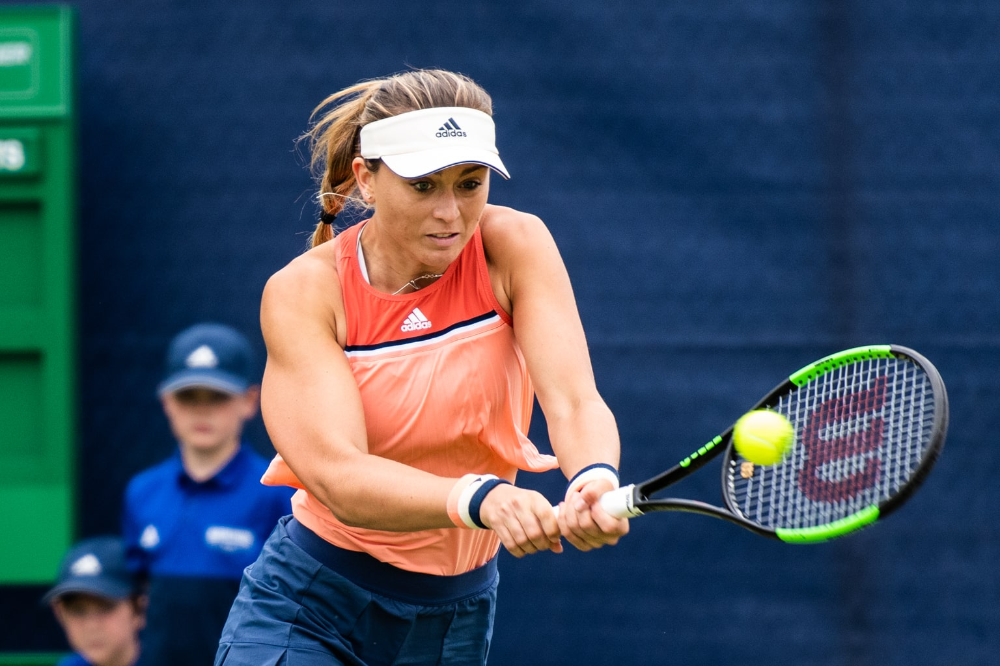
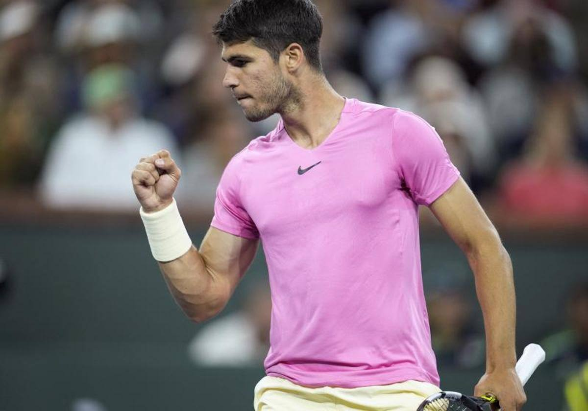
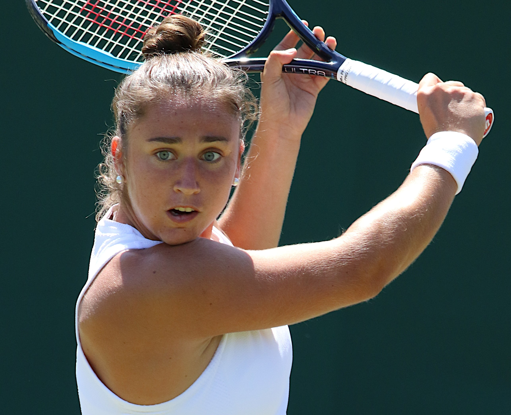
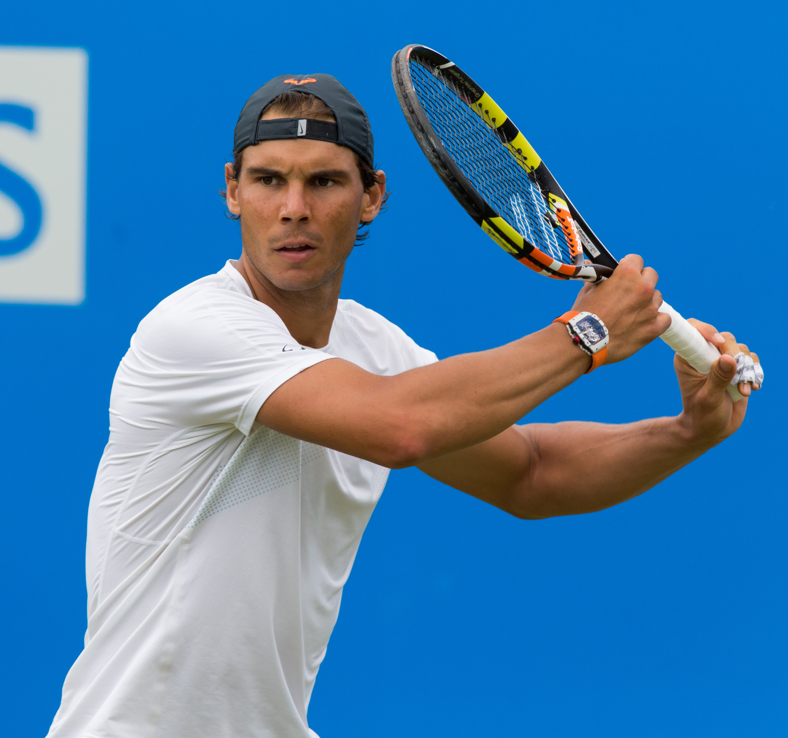
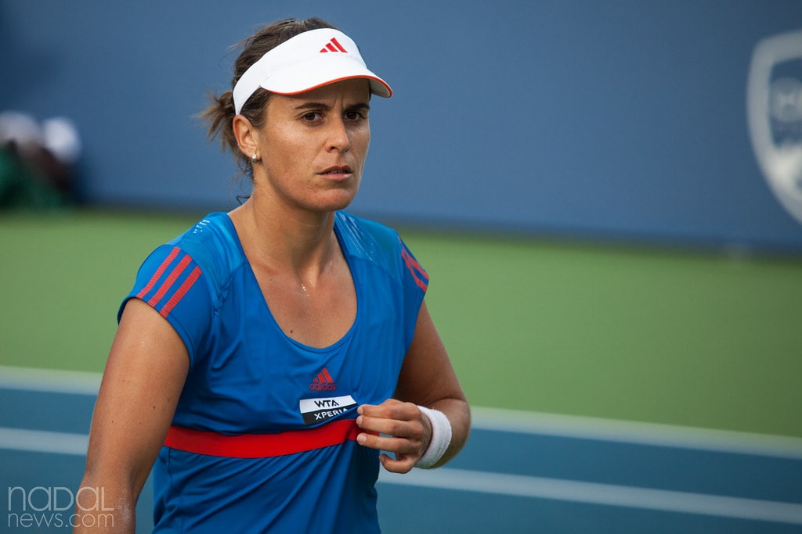
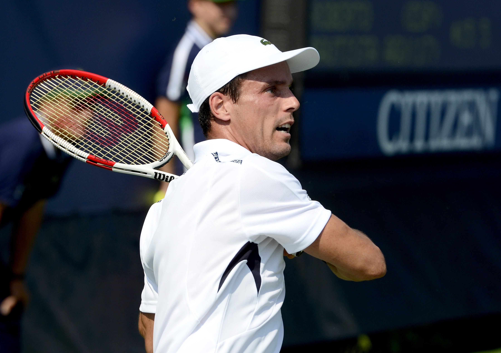

Paula Badosa
Es una tenista española. En 2014, con tan solo 16 años, fue convocada por Conchita Martinez, capitana del equipo español de Copa Federación.

Carlos Alcaraz
Es un tenista profesional español, actualmente en la segunda posición del ranking ATP.

Sara Sorribes
Es una tenista española. En octubre de 2021 alcanzó su mejor ranking individual, el cual fue el número 34 del mundo. En febrero de 2020 alcanzó el puesto número 40 del mundo en el ranking de dobles.

Rafael Nadal
Es un tenista profesional español que ocupa la posición número 664º del ranking ATP. Está considerado como el mejor tenista de la historia en pistas de tierra batida y uno de los mejores de todos los tiempos.

Anabel Medina
Es una extenista y entrenadora española, que compitió en el circuito profesional desde 1998 hasta 2014.

Roberto Bautista
Es un tenista profesional español. Considerado en su adolescencia como una de las más firmes promesas del tenis español